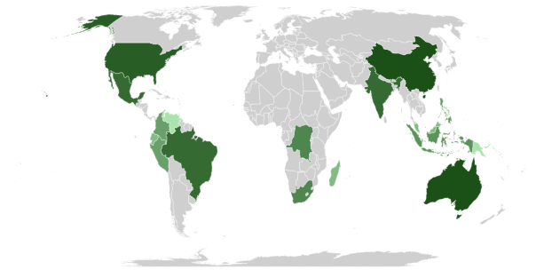

En el mundo hay millones de especies de plantas. Cada una de ellas ha adoptado formas que les permiten capturar la mayor cantidad de luz solar posible con el objetivo de crecer. Existen árboles, palmeras, cactus, trepadoras… y todas hacen todo lo posible para seguir vivas un día más.
Cada variedad tiene sus propias características, por lo que vamos a ver qué tipos de plantas hay en el mundo y para que sea más fácil esta clasificación, vamos a atender a dos clasificaciones: en clases de plantas según su tamaño y en clases de plantas según su forma de reproducción.
Las plantas son indispensables para la vida del planeta como la conocemos, ya que son las responsables de la oxigenación de la atmósfera, sin la cual los organismos que respiramos nos asfixiaríamos.
Además, las plantas fijan el carbono de la atmósfera en sus organismos, ya que consumen el CO2 atmosférico, que de acumularse aumentaría el efecto de invernadero y la temperatura global debido a que bloquean la radiación del calor hacia afuera del planeta. Visto así, las plantas son el mecanismo de enfriamiento del planeta.
De este modo, te mostramos un mapamundi y una tabla que muestra el ranking de los países con mayor diversidad de plantas en el mundo para que te des una idea de la gran importancia de estas:
| # | PAÍS | CARACTERÍSTICAS |
|---|---|---|
| 1. | Australia | alberga entre 660.000 y 700.000 especies de fauna y flora, aparte cuenta con flora autóctona como la Hakea y los Banksia Nutans. |
| 2. | Brasil | 50.000 especies de árboles y arbustos |
| 3. | China | Con una extensión de más de 9.500 millones de km2, China tiene gran biodiversidad, aunque esta contraste con las aglomeradas urbes de Pekín o Shanghái. |
| 4. | Sudáfrica | la flora predominante son los pastos, los arbustos bajos y las acacias. |
| 5. | Madagascar | el 75% de sus bosques han desaparecido en las últimas décadas, aún así está en el puesto 5 gracias a su permanente biodiversidad. |
| 6. | Ecuador | rica región tropical, con humedales, por su privilegiada ubicación geográfica en el neotrópico. |
| 7. | México | uno de los países del mundo con mayor extensión de costas, lo que supone el segundo arrecife más grande del mundo. |